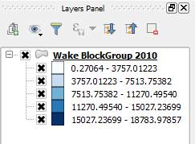

Now the values in the Layers panel should look more representative.

The map still does not look very contrasted.
This happens because we only have five intervals and we used an equal interval classification method, resulting in most polygons falling in the same class. In the next steps, we will try to improve that.